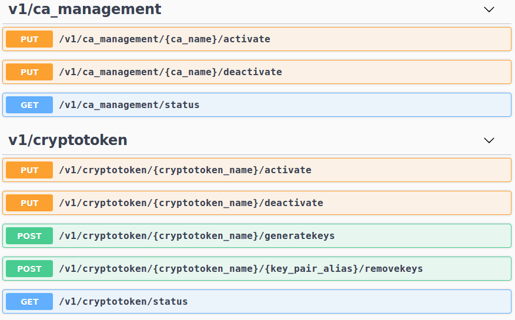

EJBCA 7.2 Release Notes
The PrimeKey EJBCA team is proud to announce the feature release EJBCA 7.2.0.
Highlights
Persistent Storage of Certificate Transparency SCT Responses
Persistent caching of Certificate Transparency SCTs (Signed Certificate Timestamps), in the form of a database-backed storage, has been added in addition to the existing in-memory caching. This reduces the number of requests to the CT log server and increases the performance in the following ways:
The database-backed storage will be used after a restart when the in-memory cache is empty.
The in-memory storage has a limit of 100 000 certificates by default, and will only keep the SCTs for the most recently requested certificates. The database-backed storage has no such limit and will be used for SCTs for less frequently requested certificates.
The database-backed storage will store partial results for a certificate, allowing EJBCA to retry a submission efficiently at a later point.
Additionally, the default configuration was changed to rate-limit connections to logs that are down or return error codes. This reduces the load on both log servers and EJBCA. For example, if a CT log rate-limits EJBCA, then EJBCA will back off for 1 second by default.
For more information, see Certificate Transparency.
Crypto Token and CA Management REST API
The EJBCA REST API has so far been limited to Certificate Management operations. We've now extended the REST API, adding resources for CA administration as well. This allows simpler remote integration and management as an option to the GUI. New endpoints support crypto token- and CA Management including:
CA activation and deactivation.
Crypto Token activation and deactivation.
Key generation and removal.

Swagger UI
New REST resources in Swagger-UI
The new endpoints will naturally be disabled by default, requiring activation via Protocol Configuration before use. For more details and endpoint documentation, see EJBCA REST Interface.
Upgrade Information
Read the EJBCA 7.2 Upgrade Notes for important information about this release. For upgrade instructions and information on upgrade paths, see Upgrading EJBCA.
Change Log: Resolved Issues
For full details of fixed bugs and implemented features in EJBCA 7.2.0, refer to our JIRA Issue Tracker.
New Features
ECA-7943 - Add selenium test for creating a CA with partitioned CRLs
ECA-8092 - Remove Hard Tokens - a followup ticket
ECA-8113 - Add REST endpoint for cryptotoken management
ECA-8114 - Write systemtests for crypto token REST resource
ECA-8115 - Update static swagger file for documentation
ECA-8116 - Create REST endpoint for cryptotoken activation
ECA-8117 - Create REST endpoint for cryptotoken deactivation
ECA-8118 - Create REST endpoint for cryptotoken key creation
ECA-8127 - Create REST endpoint for CA Activation
ECA-8151 - Update CLI to allow viewing/generating partitioned CRLs
ECA-8249 - Import CVC CA CLI command should be able to import DVCA
Tasks
ECA-8125 - As a tester, I would like to call Rest endpoints for both testing and utilities that will work internally and externally of a docker image.
ECA-8137 - POC: Remote access for REST using GIT
ECA-8141 - Testing: Integration / Verification Testing
ECA-8176 - Exploratory testing using Swagger-UI
ECA-8182 - Document new REST resources
ECA-8194 - Add example script for ejbca-rest-api/v1/certificate/pkcs10enroll to the REST documentation
ECA-8209 - -Ddoc.update=true does not work anymore
Improvements
ECA-7059 - Remove properties files for CRLstore and CertStore
ECA-7272 - Security verification
ECA-7418 - Java 11: Xerces throws ClassNotFoundException: org.w3c.dom.ls.DocumentLS
ECA-8053 - Return correct version from REST status endpoint
ECA-8129 - Enable CT fastfail caching / backoff by default
ECA-8130 - Set up CT log test server and document it
ECA-8131 - Create DB update scripts and ORM files for new SCT table
ECA-8132 - Entity Bean for SCT disk cache
ECA-8134 - Saving SCT data to persistent table
ECA-8135 - Save and Read SCTs from persistent SCT table
ECA-8136 - Upgrade notes for persistent SCTs
ECA-8138 - Unit test of OcspCtSctListExtension
ECA-8149 - Code cleanup April 2019
ECA-8152 - Prevent broken certificate chain from being imported in the CLI using the 'ca importca' command
ECA-8156 - Generate URLs for URL rewrite with Client Toolbox
ECA-8158 - Documentation: Update CertSafePublisher description
ECA-8159 - Improve HealthCheck to also perform test signatures on the audit log
ECA-8165 - Create REST endpoint for CA Deactivation
ECA-8167 - Possibility to issue a final CRL with unlimited end date 99991231235959Z
ECA-8170 - Improve reliability of service workers in a cluster
ECA-8173 - Service workers always log success if the service ran, no matter the result
ECA-8181 - Warn when slot does not contain a key with the alias 'testKey' and relax the naming convention for these keys
ECA-8192 - Move REST resources into separate modules
ECA-8203 - CA token sign test should not sign with the same key twice
ECA-8206 - Use SHA256 with creating signed PKCS7 messages from X509 CAs
ECA-8208 - Refactor SCT caching to cache partial results also
ECA-8211 - Create a return type for publishers in order to track numbers of successes and failures
ECA-8229 - Debug log all steps in StartupSingletonBean
ECA-8230 - Base archiveCutoff on actual producedAt time instead of currentTimeMillis
ECA-8231 - Use the default CA of the SCEP alias, if no CA is specified in the message
ECA-8239 - Remove jsessionid from URLs on first session visit
ECA-8250 - Protocol Configuration for new REST resources
ECA-8264 - Update version in CT user agent to 1.1
ECA-8280 - Seconds in certificate's "valid from" and "valid to" fields (EJBCA API)
Bug Fixes
ECA-7739 - Using a certificate profile template does not select the correct fields
ECA-7828 - Drop down menu for 'Select Worker' under 'Services' is not responsive
ECA-7841 - Regression: Missing JAXB in JDK11 and lack of bundled API JAR causes complication error for Acme classes
ECA-8025 - Regression: Wrong CA-certificate is downloaded in the CA web
ECA-8079 - Edit CA page problems when creating CA from statedump
ECA-8099 - CA created with "Signed By External CA" has Serial Number Octet Size -1
ECA-8144 - Unable to change publisher type during edit
ECA-8147 - Regression: Cannot enter LDAP protocol CDP URL
ECA-8148 - Unable to edit and save access rules in basic mode
ECA-8153 - CertSafe Publisher throws NPE
ECA-8155 - Return not found on unhandled EST operations
ECA-8160 - ejbca.sh does not detect current working directory correctly
ECA-8161 - Ticket #215 VIECA?
ECA-8168 - NPE in RA web when rendering view enrollwithusername.xhtml
ECA-8191 - Change the ocsp.nonexistingisbad.uri pattern
ECA-8215 - Converter missing in selectManyListbox
ECA-8216 - Installation: Ejbca.ear does not deploy on Wildfly 10
ECA-8234 - OCSP requests with missing issuerKeyHash causes exception
ECA-8240 - Typos in create database postgresql script
ECA-8243 - Regression: NPE when a service is not scheduled to run
ECA-8253 - Integer converter missing in selectManyListbox on LDAP Publisher page
ECA-8254 - Check and possibly fix public key AlgorithmIdentifier parameters when issuing certificates
ECA-8308 - OcspKeyBinding CSR is not compatible with Microsoft CA